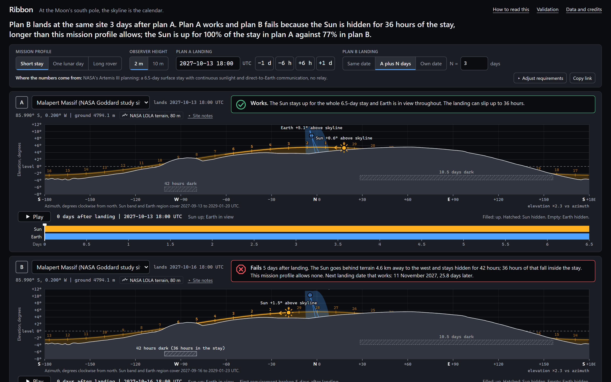

2026 NASA Space Apps Challenge · Lunar Landing Site Navigator
Ribbon
At the Moon's south pole, the skyline is the calendar.
A landing-site navigator for mission planners, educators, and everyone else.
Team Falcate
Muhammad Qidwai
Muzammil Hassan
Muhammad Asif
Mohammad Hassan
Rameesha Sheeraz
Aqsa Awan
The landing slipped three days. Is the site still good?
Today that answer takes several tools, one site and one date at a time.
A table of angles
Typed timestamps
One pin on a map
…then again for the next site, and again for the next date.
A launch slip past November 2025 “would require waiting 9 to 12 months until the right lighting conditions return at the landing site in the polar region.”
SpaceNews, 18 July 2024, reporting NASA's explanation for cancelling the VIPER rover.
One skyline. One band. One box.
Unroll the full circle of horizon at a landing site into one strip. Real skyline: Malapert Massif, lunar south pole.
The Sun laps the horizon every 29.5 days and never climbs. Ticks mark days.
Earth stays put and wobbles in a small box.
The terrain decides the rest.
The width of a mountain is days of darkness.
Two plans, two ribbons, one glance.

1
2
3
The live app, as it opens: Malapert Massif, plan B lands three days after plan A.
1One sentence compares the two plans.
2A verdict in plain words: works or fails, why, where, and when.“Fails 5 days after landing. The Sun goes behind terrain 4.6 km away to the west…”
3How far the date can slip, and the next date that works.
54 catalogued sites, real skylines for 23 polar points, three mission profiles. Runs in any browser; no install, no account.
Slide the date. Read the cost.
A
lands 2027-10-13 18:00 UTC
Works. The landing can slip up to 36 hours.
B
lands 2027-10-16 18:00 UTC · three days later
Fails 5 days after landing. The Sun goes behind terrain 4.6 km to the west for 42 hours; 36 of them fall inside the stay.
Sun hidden during the 6.5-day stay:0
Close-up of the same strip, west to north-east. Thick amber: the Sun's path during the stay, one tick per day. Red dots: Sun behind terrain.
Built on NASA data. Checked against it.
Sun and Earth directions against NASA JPL Horizons, 6,610 rows per body, six cases
0.0078° Sun
0.0034° Earth
Largest difference found. The Sun's disc is about 0.53° across.
Our skylines against NASA Goddard's sunlight maps, 23 south-pole sites
0.975
correlation
Largest gap: our story site, 18% against 5%. Plan B fails either way; plan A's margin is the fragile part.
A real landing: Blue Ghost Mission 1, March 2025
Sunset 347.8 hours after landing in our tool; the mission reported about 346. No terrain needed at this mid-latitude site.
Terrain: NASA LRO Lunar Orbiter Laser Altimeter (LOLA) 80 m and 240 m grids, NASA Planetary Data System. Checked with JPL Horizons and NASA Moon Trek. “Sun up” means at least half the disc above the skyline, the convention of ESA's lunar lander site study (De Rosa et al. 2012).
A planner's question, answered in seconds. A picture anyone can read.
Mission plannerscompare sites and dates when the schedule moves.
Educatorsshow why the Moon's south pole is so hard to land at.
Everyonetry it now, in any browser.
Next: finer terrain for any point, solar eclipses on the timeline, and export of a ribbon for mission reviews.
kakaman-kakaman.github.io/lunar-ribbon
Source code
github.com/Kakaman-Kakaman/lunar-ribbon
Ribbon · Team Falcate · Lunar Landing Site Navigator1 / 7